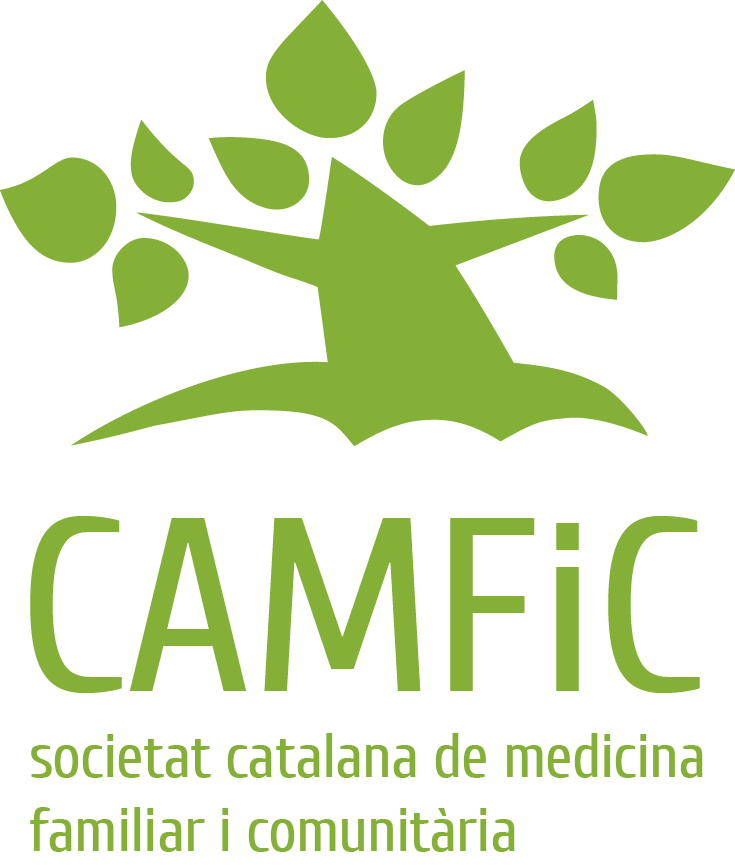

SDL-PAND: PANDEMIC SIMULATION TO TEST THE EFFECTIVENESS OF CONTAINMENT STRATEGIES THROUGH CELLULAR AUTOMATA AND INTELLIGENT AGENTS USING FORMAL LANGUAGES
|
|
 |
SDL-PAND aim is to become a Minimum Viable Digital Twin of the Catalonia pandemic situation to enhance the discussion based on models.
SDL-PAND: PANDEMIC SIMULATION TO TEST THE EFFECTIVENESS OF CONTAINMENT STRATEGIES THROUGH CELLULAR AUTOMATA AND INTELLIGENT AGENTS USING FORMAL LANGUAGES |
With the collaboration of:
|